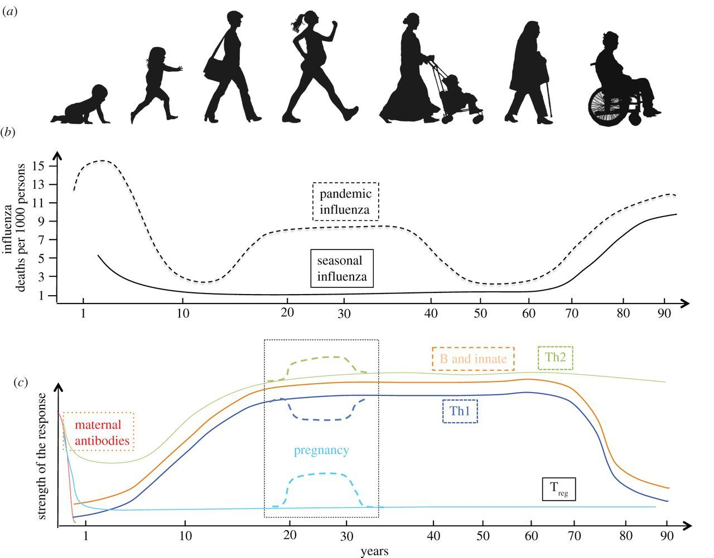

Background

Figure 1. (a) The seven ages of woman. (b) Schematic graph of excess deaths from seasonal or pandemic influenza over the lifetime of an individual represented as number of deaths per 1000 persons (adapted from [2]). Note that while pregnancy increases the risk of severe influenza, in severe pandemics such as 1918/1919 there were also excess deaths in previously healthy young adults who were not pregnant. (c) Schematic graph of the different arms of the immune response to influenza over the lifetime of an individual.